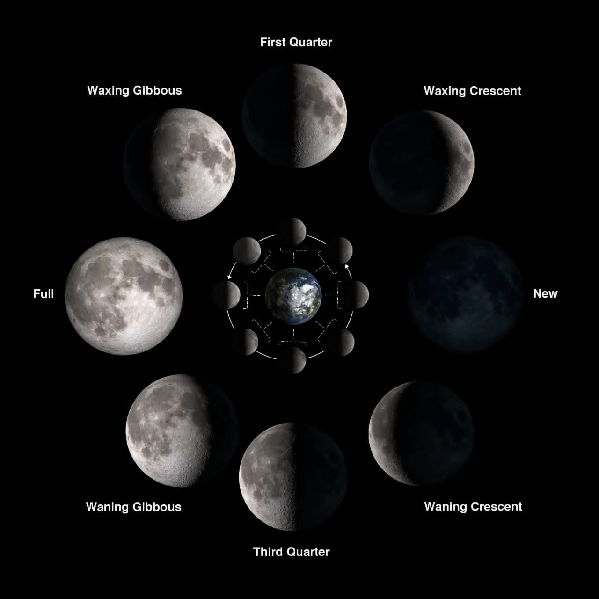

What is moon?
The Moon is Earth's only natural satellite and the fifth largest moon in the solar system.The Moon's presence
helps stabilize our planet's wobble and moderate our climate.The Moon's distance from Earth is about 240,000
miles (385,000km).The Moon has a very thin atmosphere called an exosphere.
We usually see moon in the night sky and also during the day.Some other planets also have moons or natural
satellites.
Our moon is about a quarter the size of the Earth.Because it is far away it looks small, about half a degree
wide.The gravity on the moon is one-sixth of the Earth's gravity.It means that something will be one-sixth as
heavy on the Moon than on Earth. The Moon is a rocky and dusty place.It moves slowly away from the earth at a
rate of 3.8cm per year,due to the effect of tidal dissipation.
Rocket parts are expected to fall on the Moon on March 4, 2022; Bill Gray (a mathematician and physicist) thinks
that the parts are not from the carrier rocket that sent the Deep Space Climate Observatory satellite "to a
gravitationally-stable Lagrange point", in 2015.

Why moon is called moon?
The word moon can be traced to the word mōna, an Old English word from medieval times. Mōna shares its origins
with the Latin words metri, which means to measure, and mensis, which means month. So, we see that the
moon is called the moon because it is used to measure the months.
Who named the moon?
Earth's moon, the longest known of all, was given the name "Selene" by the Greeks and "Luna" by the Romans, each
a goddess.
How old the moon is?
The moon is a very old soul, it turns out. A new analysis of lunar rocks brought to Earth by Apollo astronauts
suggests that the moon formed 4.51 billion years ago — just 60 million years after the solar system
itself took shape
Phases of moon
Because the moon is round,half of it is lit up by the sun.As it goes around (or orbits) the Earth, sometimes the
side that people on Earth can see is all lit brightly. Other times only a small part of the side we see is lit.
This is because the Moon does not send out its own light. People only see the parts that are being lit by
sunlight. These different stages are called Phases of the Moon .
It takes the Moon about 29.53 days (29 days, 12 hours, 44 minutes) to complete the cycle, from big and bright to
small and dim and back to big and bright. The phase when the Moon passes between the Earth and Sun is called the
new moon. The next phase of the moon is called the "waxing crescent", followed by the "first
quarter", "waxing gibbous", then to a full moon. A full Moon occurs when the moon and sun are on opposite sides
of the Earth. As the Moon continues its orbit it becomes a "waning gibbous", "third quarter", "waning crescent",
and finally back to a new moon. People used the moon to measure time. A month is approximately equal in time to
a lunar cycle.
The moon always shows the same side to Earth. Astronomers call this phenomenon tidal locking. This means
that half of it can never be seen from Earth. The side facing away from Earth is called the far side or dark
side of the Moon even though the sun does shine on it.we just never see it.

Characteristics
Because it is smaller, the Moon has less gravity than Earth (only 1/6 of the amount on Earth). So if a person
weighs 120 kg on Earth, the person would only weigh 20 kg on the moon. But even though the Moon's gravity is
weaker than the Earth's gravity, it is still there. If person dropped a ball while standing on the moon, it
would still fall down. However, it would fall much more slowly. A person who jumped as high as possible on the
moon would jump higher than on Earth, but still fall back to the ground. Because the Moon has no atmosphere,
there is no air resistance, so a feather will fall as fast as a hammer.
Without an atmosphere, the environment is not protected from heat or cold. Astronauts wore spacesuits, and
carried oxygen to breathe. The gloves of the spacesuit, were never taken off on the Moon. The suit weighed about
as much as the astronaut. The Moon's gravity is weak, so it was not as heavy as on Earth.
In the Earth, the sky is blue because the blue rays of the sun bounce off the gases in the atmosphere, making it
look like blue light is coming from the sky. But on the moon, because there is no atmosphere, the sky looks
black, even in the daytime. There is no atmosphere to protect the moon from the rocks that fall from outer
space, and these meteorites crash right into the moon and make wide, shallow holes called craters. The
moon has thousands of them. Newer craters gradually wear away the older ones.